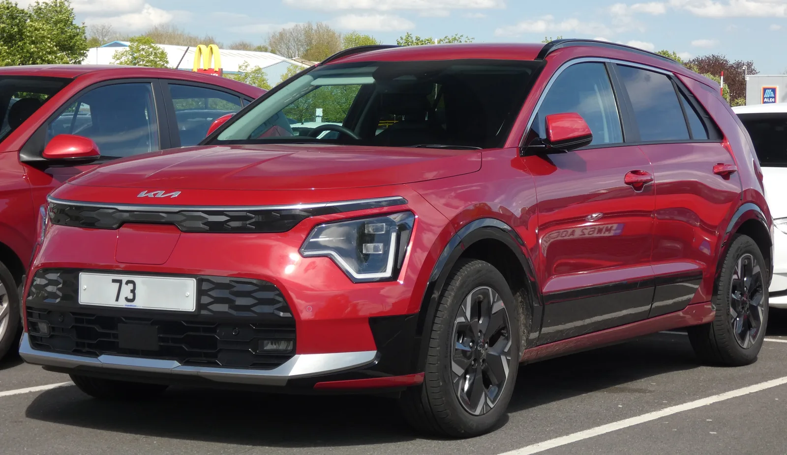
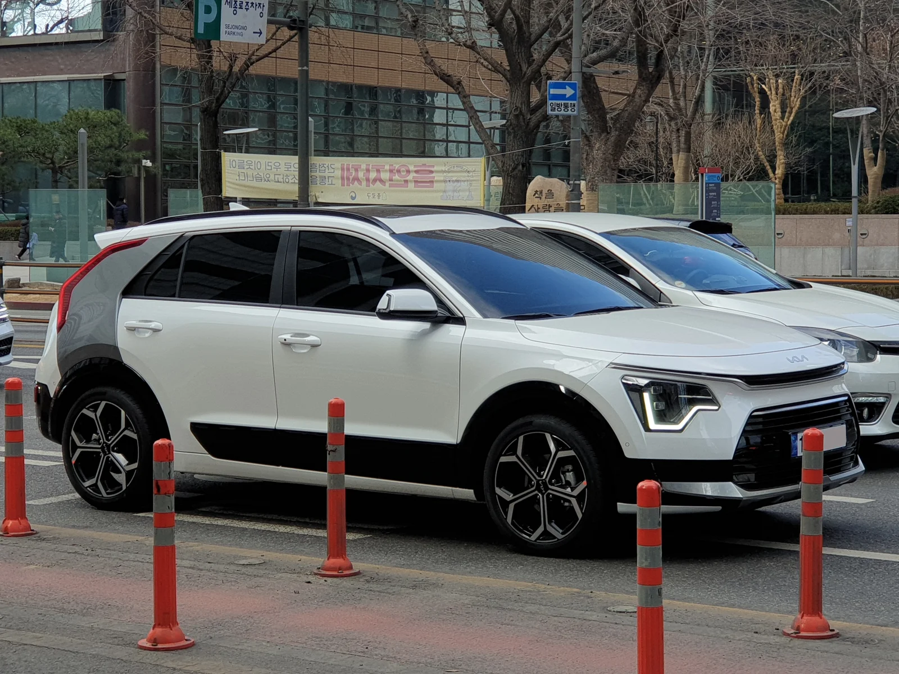

▲ 기아 니로 EV — 같은 차체의 니로 하이브리드와 파워트레인만 다르다는 점에서, 전기차·하이브리드 유지비를 가장 공정하게 비교할 수 있는 조합이다
"전기차가 기름값이 안 드니 결국 더 이득 아니냐"는 말, 한 번쯤 들어보셨을 겁니다. 이 질문에 제대로 답하려면 연료비만 볼 게 아니라 초기 구매가, 보조금, 자동차세, 보험료, 정비비, 그리고 무엇보다 감가상각까지 모두 더한 '총소유비용(TCO)'을 따져야 합니다. 마침 기아 니로는 같은 차체에 하이브리드와 순수 전기차(EV) 버전이 나란히 존재해, 파워트레인 차이만으로 유지비를 비교하기에 가장 공정한 조합입니다. 연간 1만 5,000km를 5년간 주행한다고 가정하고 직접 계산해봤습니다.
1. 출발선부터 다르다 — 초기 가격 차이 1,927만원

▲ 니로 하이브리드 — 세제혜택 적용 후 2,832만원부터 시작해, 같은 차체의 EV보다 훨씬 낮은 가격에 접근할 수 있다
니로 하이브리드는 세제혜택을 적용받은 가격 기준 2,832만원부터 시작합니다. 반면 니로 EV는 국고·지자체 보조금을 모두 반영해도 실구매가가 약 4,759만원 수준으로 형성됩니다. 두 차의 출발선부터 약 1,927만원 차이가 나는 셈입니다. 이 초기 격차는 이후 계산되는 연료비·세금 절감분을 모두 상쇄하고도 남을 만큼 큰 금액이라는 점이 이번 비교의 핵심 변수입니다.
2. 연료비 — EV가 압도적으로 유리하지만 '압도적'의 정도는 상황에 따라 다르다

▲ 전기차 충전 — 완속·급속 등 충전 방식에 따라 실제 충전 단가가 크게 달라져, 연료비 절감 폭도 그만큼 달라진다
연간 1만 5,000km를 주행한다고 가정하면, 니로 하이브리드는 20.5km/L 연비 기준으로 약 732리터의 휘발유가 필요합니다. 휘발유 가격을 리터당 1,700원 안팎으로 잡으면 연간 약 124만원, 5년이면 약 620만원의 연료비가 듭니다. 니로 EV는 5.3km/kWh 전비 기준으로 연간 약 2,830kWh의 전력이 필요합니다. 집에서 완속충전 위주로 이용하면 연간 약 85만원, 공용 급속충전을 자주 이용하면 연간 약 100만원 안팎까지 올라갈 수 있습니다. 5년으로 계산하면 EV의 연료비는 약 425만~500만원 수준으로, 하이브리드 대비 100만~200만원가량 저렴합니다. 다만 이 절감폭은 충전 인프라 접근성에 따라 크게 달라지므로, 자가 충전기를 설치할 수 없는 환경이라면 절감 효과가 눈에 띄게 줄어들 수 있습니다.
3. 세금·보험·정비 — EV가 유리한 항목도 있다
자동차세는 EV가 확실히 유리합니다. 전기차는 배기량과 무관하게 연 13만원으로 일괄 부과되는 반면, 니로 하이브리드는 배기량 기준으로 연 30만원 안팎이 부과됩니다. 5년으로 보면 EV는 약 65만원, 하이브리드는 약 150만원으로 EV가 약 85만원 유리합니다. 정비비 역시 EV가 유리한 편입니다. 엔진오일 교환이나 벨트류 정비가 필요 없는 EV는 5년 누적 정비비가 약 130만원 수준인 반면, 하이브리드는 엔진 관련 소모품까지 더해져 약 250만원 수준으로 추정됩니다.
반대로 보험료는 EV가 다소 불리합니다. 배터리 손상 시 수리비가 크다는 점이 반영돼, 동급 하이브리드보다 연간 수십만원가량 보험료가 높게 책정되는 경우가 많습니다. 5년 누적으로 보면 EV가 하이브리드보다 20만~50만원가량 더 부담하는 구조로 추정됩니다.
4. 진짜 변수는 '감가상각' — EV가 훨씬 더 많이 떨어진다
여기까지만 보면 EV가 여러모로 유리해 보입니다. 하지만 총소유비용 계산에서 가장 큰 비중을 차지하는 항목은 따로 있습니다. 바로 감가상각, 즉 5년 뒤 차를 팔 때 남는 가치입니다. 업계 조사에 따르면 전기차의 5년 후 잔존가치는 신차가의 40~45% 수준인 반면, 하이브리드는 55~60% 수준을 유지하는 것으로 나타났습니다. 배터리 열화에 대한 우려, 빠르게 발전하는 배터리 기술로 인한 구형 모델의 상대적 가치 하락 등이 EV 감가폭이 큰 주요 원인으로 꼽힙니다.
니로 EV(약 4,759만원)에 40~45% 잔존가치를 적용하면 5년 후 남는 가치는 약 1,900만~2,140만원이고, 손실액은 약 2,620만~2,860만원에 달합니다. 반면 니로 하이브리드(2,832만원)에 55~60% 잔존가치를 적용하면 남는 가치는 약 1,558만~1,700만원, 손실액은 약 1,130만~1,275만원 수준입니다. 두 차의 감가상각 손실액 차이만 약 1,400만~1,500만원에 달하는 셈입니다. 이 격차는 앞서 계산한 연료비·세금·정비비에서의 EV 절감분(약 250만~350만원 안팎)을 압도적으로 뛰어넘습니다.
| 항목 | 니로 EV | 니로 하이브리드 |
|---|---|---|
| 초기 실구매가 | 약 4,759만원 | 약 2,832만원 |
| 5년 연료비 | 약 425만~500만원 | 약 620만원 |
| 5년 자동차세 | 약 65만원 | 약 150만원 |
| 5년 정비비 | 약 130만원 | 약 250만원 |
| 5년 보험료(추정 격차) | +20만~50만원 | 기준 |
| 5년 후 잔존가치 | 40~45%(약 1,900만~2,140만원) | 55~60%(약 1,558만~1,700만원) |
| 5년 감가상각 손실 | 약 2,620만~2,860만원 | 약 1,130만~1,275만원 |
5. 그렇다면 EV는 언제 유리해지나
이 계산은 연간 1만 5,000km라는 '보통 수준'의 주행거리를 기준으로 한 것입니다. 만약 연간 주행거리가 2만~3만km 이상으로 늘어나면 상황이 달라집니다. 연료비 절감폭이 훨씬 커지기 때문에, EV와 하이브리드의 총소유비용 격차가 눈에 띄게 좁혀집니다. 업계에서는 통상 EV가 하이브리드 대비 손익분기점에 도달하는 데 10년 안팎이 걸린다고 보는데, 국내 운전자의 평균 차량 교체 주기가 7~8년인 점을 감안하면 대다수 소유자는 이 손익분기점에 도달하기 전에 차를 바꾸는 셈입니다. 다만 연간 3만~4만km 이상을 주행하는 고주행 운전자라면 손익분기점이 4년 이내로 크게 앞당겨질 수 있습니다.
6. 계산 결과를 볼 때 알아둘 것
이번 계산은 니로라는 특정 모델, 연간 1만 5,000km라는 특정 조건을 기준으로 한 추정치입니다. 실제 유지비는 거주 지역의 전기요금·보조금, 개인의 운전 습관, 보험 가입 조건에 따라 달라질 수 있습니다. 다만 분명한 것은 "전기차가 기름값이 안 드니 무조건 이득"이라는 단순한 접근은 절반만 맞는 이야기라는 점입니다.